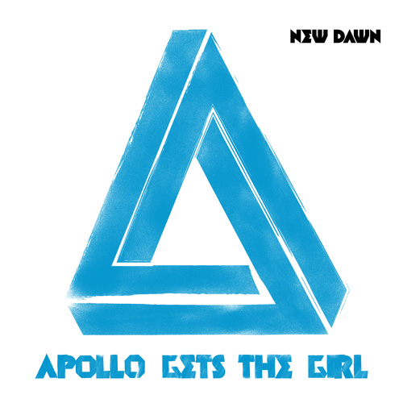

I was contacted by the management company Lucrative 6 to design a series of single covers for the debut campaign of the Glaswegian band Apollo Gets The Girl.
Using the symbol of the impossible triangles, I employed a stencil / aerosol can effect.